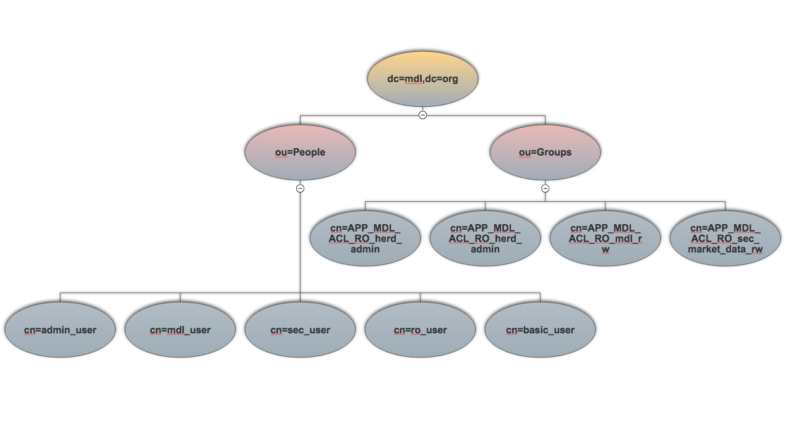

Users and Groups
MDL OpenLDAP organization¶
MDL uses an OpenLDAP installation to manage User authentication and authorization across all its components.
There are 2 main Organizational Units (OUs) which are used:
- ou=People: Each individual user is a member of this organizational unit. These are what employees, users or service accounts are represented with.
- ou=Groups: Users may be part of 'auth-groups' (also known as AD groups) which are members of this organizational unit. This helps grouping users together and applying cross-cutting policies or privileges across users which are members of a given group.
Attributes on MDL LDAP objects¶
- User attributes: List of attributes with example values which are defined for objects of type User:
dn: cn=sec_user,ou=People,dc=mdl,dc=org objectClass: inetOrgPerson objectClass: posixAccount uid: sec_user cn: sec_user sn: null userPassword:: e1NTSEF9WVlaaGJxYmhGbTRwQ1JWaERRdUdVV3gyc3l4OHlPWUU= uidNumber: 10003 gidNumber: 1001 homeDirectory: /home/sec_user mail: sec_user@mdl.org loginShell: /bin/bash
- Group attributes: List of attributes with example values which are defined for objects of type Group:
dn: cn=APP_MDL_ACL_RO_herd_ro,ou=Groups,dc=mdl,dc=org cn: APP_MDL_ACL_RO_herd_ro objectClass: top objectClass: groupOfNames member: cn=ro_user,ou=People,dc=mdl,dc=org member: cn=basic_user,ou=People,dc=mdl,dc=org
memberOf Overlay¶
Herd uses 'memberOf' information contained in each request's HTTP headers to determine the auth-groups a user is part of and
subsequently allows/blocks actions which are pre-defined in a role-to-security-function mapping.
This overlay is installed and enabled in MDL's OpenLDAP installation. Please note that the memberOf attribute is an operational attribute, and it is requested explicitly by the Apache webserver which reverse-proxies to the Herd app.
LDAP directory tree¶
A pictorial representation of MDL's LDAP directory structure:
